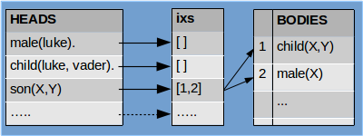

Language¶
%matplotlib inline
import sys
sys.path.append('../lib')
The decision¶
Knowing large binary spaces, how to do operations in them and building structures may be the base for building high cognition and a good start, but is not enough to enable productive exploration of the possibilities.
We need tools to solve more complex problems. First I played around with python abit, look into [lib/bi_struct.py], but the more I experimented the more I thought it is not enough. I needed more symbolic approach I needed something which can be grounded from the get go on VSA (Vector Symbolic Architecture), so I started exploring Prolog. I had familiarity with it for some time. First I tried with some non-obvious tasks to get the feel of symbolic manipulation capabilities, then after creating a Production system in less than 150 lines of code, I saw how grammatically simple it could be, I was hooked.
So it was decided I would implement Prolog like system on top of VSA.
I had to start with the smallest possible core, but still show the potential. After some fiddling the result is VERSION 0.1, which consist of :
Using only tiny-tuple, so no hierarchical structures yet. Would have to wait for 0.2
Unification : finding most-general-unifier
SLD Prolog algorithm : this is the backtracking search process of Prolog
no arithmetic, requires hierarchical structures, so v0.2
so far syntax is almost 100% Prolog
Design¶
Version 0.1 is build on 3 components :
knowledge database
engine
parser
As I said so far I’m using only tiny-tuples.
Initially I always try to implement all the components as much as possible as standalone units. It is easier to test and extend them when I’m still unsure of the potential functionality and is easier to replace.
Knowledge database (KDB)¶
The purpose of KDB is to store, process and manipulate relational facts and rule-clauses. (I use the name rule-clause, to distinguish it in the future from production rules, which we may need to use if my idea to merge both works out).
Any tiny-tuple represent a predicate which is nothing more than a relation consisting of functor and terms and looks like this :
functor(term1, term2, ..., term14)
for example :
child(luke, vader)
in SDP format it is represented by the following expression :
$0 * child + $1 * luke + $2 * vader
that is stored in a single SDP, of maximum 13 bind-pairs (2 are reserved for internal use if I need them) where dollar symbols play the role of a slot number. In this case we have to know the slot-symbols in advance, so we can unpack the structure easily. All the symbols participating in the expression/predicate are stored into cleanup-lex-memories, thus we can do full reconstruction.
That’s good for storing facts and predicates, but to perform actions we need to handle rule-clauses.
General Bi clause looks like this :
son(X,Y) :- child(X,Y), male(X).
X is son of Y if X is child of Y and X is also male
which is nothing more than a bunch of predicates. So this particular clause can be stored in 3 SDP’s, one for every predicate in the format we mentioned above.
The role to store and handle all those clauses and related CUPs is the job of the Knowledge Database (KDB)

Engine (Interpreter)¶
The engine role is to implement Unification and search mechanism (I want to replace it with more general search at some point).
What is unification ?
Manna from the sky :). No kidding… it is the ultimate shoehorn.
In Bi as in Prolog variables start with uppercase, otherwise the term is atom (symbol in VSA lingo).
Let say we have two relations :
male(X) and male(luke)
the goal is to find X by matching/unifying the two relations. Said in proper math lingo, finding the most general unifier (MGU).
We start by matching the functors, in this case they are both male, so we can continue and match the first terms, one is variable the other is value/atom :
{ X : luke }
that is our MGU, we now know that X=luke.
If we had to unify the following predicates :
male(X) and male(Y)
the MGU will be :
{ X : Y }
which is still valid as long as X and Y are not unified already with contradicting values/atoms, which they are not. But if we had the following one :
male(vedar) and male(luke)
the unification should fail, because vedar and luke are different symbols/atoms/persons.
The terms we can match can be more complex, consider for example :
son(X, vader) and son(luke, Y)
{ X : luke, Y : vader }
or better yet :
p1(X, p2(atom1)) and p1(atom2, Y)
{ X : atom2, Y : p2(atom1) }
p1(X, p2(atom1)) and p1(atom2, p2(Y))
{ X : atom2, Y : atom1 }
and so on … the unification can become very complex. The MGU tells us what replacements we have to make so that the two predicates look the same.
So far all the unifications were one-off, what if we had a way to make this a process. What do I mean ?
Let’s imagine we can build a database with thousands of facts and rules representing relations, now if we could unify against the whole database we can find solutions to complex problems. We just provide the relations and then unification guided by some mechanism can do the job for us.
The core of Prolog relies on this process. The mechanism is depth-first tree search with backtracking and is called SLD resolution.
Let say that we ask the question : Who is the son of Vader ?
son(X,vader)
The interpreter start by looping trough the database until it finds rule with a head son(A,B), which may look like :
son(A,B) :- child(A,B), male(A).
Then unification is applied which results in MGU { X : A, B : vader }. After that the body of the rule is processed from left to right passing and updating the MGU accordingly. Every predicate of the body becomes a sub-goal which follow the same procedure. If all sub-goals succeed the original query succeeds.
If for some reason sub-goal unification fails the interpreter goes one step back and retries the previous sub-goal again (this is called backtracking), but this time the database-search continues forward from position it reached the last time, not from the beginning. If it reaches the end of the database then the subgoal fails.
During this process the interpreter keeps track of the MGU at every sub-goal in a stack (choice-points) and on retry it restores the MGU replacing the failed-one.
One additional complication of the algorithm is the need to localize and un-localize variables, so that the variables are valid only within the clause scope of execution. F.e. the example above the MGU will more correctly be (the one in the curly brackets):
unify> [‘son’, ‘L0_1’, ‘vader’] [‘son’, ‘L1_1’, ‘L1_2’] , {‘L0_1’: ‘L1_1’, ‘L1_2’: ‘vader’}
where the first number in the localized name is the level (of the sub-goal) and second is the variable relative position from the beginning of the rule-clause.
The whole process is one giant unification directed by the SLD mechanism.
Few words about the :
Implementation¶
The unification is implemented by the mutually-recursive methods .unify() and .unify_vars().
The SLD algorithm by the mutually-recursive methods .solve() and .solve_goals().
And backtracking via the generator .kdb.backtrack() in .solve_goals().
The thing that took me the most time to implement and was the most frustrating was LOCALIZATION. If you don’t want variable names to “leak” and disrupt the unification process you have to localize the variables at entering new clause during execution. It is the same idea in normal languages where variables have a scope of validity.
As I said the algorithm uses STACK to store intermediate results of unification (choice points), so that backtracking mechanism can retry a goal if the previous chain of search failed.
Parser¶
Initially I used LEPL for parsing, but it is not supported for a long time, so I switched to LARK. The current grammar is very simple and you can understand it easily, look below.
The only tricky part is to distinguish between predicate and struct. Their definitions may look similar, but struct can be a term, where predicate does not.
?start : _clause_list
int : /[0-9]+/
atom : /[a-z][0-9a-zA-z_!?]*/
var : /[A-Z][0-9a-zA-z_]*/
functor : atom
_clause_list : clause+
head : predicate
body : _predicates "."
fact : predicate "."
clause : fact | head ":-" body
predicate : atom | functor "(" terms ")" | assignment | expr
_predicates : predicate ("," predicate)*
?term : int | atom | var | struct
terms : term ("," term)*
struct : functor "(" terms ")"
?assignment : var "=" term
?var_int : var | int
expr : var "is" sum
?sum : var_int "+" var_int
%import common.WS
%ignore WS
Components in action¶
We will proceed in the same order.
For KDB from functional standpoint you only need to know about .add_clause(head, [body]), which is used to add fact or rule-clauses to the database and .backtrack() generator which helps implementing Backtracking.
The arguments to .add_clause() are dicts with the format you can see below.
from kdb import *
k = KDB()
k.add_clause({'fun': 'fact'})
0
print k.listing()
0> fact.
k.add_clause({'fun': 'male', 'terms' : ['luke'] })
k.add_clause({'fun': 'child', 'terms' : ['luke', 'vader'] })
2
print k.listing()
0> fact.
1> male(luke).
2> child(luke,vader).
k.add_clause({'fun': 'son', 'terms' : ['X', 'Y'] }, [{'fun': 'child', 'terms' : ['X', 'Y'] }, {'fun': 'male', 'terms' : ['X'] }])
3
print k.listing()
0> fact.
1> male(luke).
2> child(luke,vader).
3> son(@1,@2) :- child(@1,@2), male(@1).
But lets not forget that all symbols/atoms are SDP vectors.
k.atoms
fact : 1101111110110110100111010010000111001011111100110011111111100010101111110100000000010110001011001001... ...
male : 1101111101100110010111010110110011001010001011101011011011001010101011101110110010101000001111110100... ...
luke : 1101111011100000000110110100001001000111101001011011110110011001110111001111010101001110100100001001... ...
child : 0101010011000000001101011010011100000010111010001000011001000000010101010110001011110110111000010111... ...
vader : 0110101110000111011010010011010111111100110110100011100101110011110110011111000010111001111000011100... ...
son : 1000001101010100001100011110101111011110000111111000001000011101010011001010111000111111001001110011... ...
Next is the Engine. Let’s load for our experiments the Star Wars genealogy database. This also demonstrates how to use all the parts together.
from bi_engine import *
from bi_parser import *
#first create the Knowledge DB
kdb = KDB(items=100)
# .. create a parser and instruct it to write whatever is parsed to the KDB
parser = BiParser(kdb=kdb, write2db=True)
# .. parse the file
parser.parse('../test/sw_bi_db.pl')
# create engine that serves the kdb
engine = BiEngine(kdb=kdb)
print kdb.listing()
0> female(leia).
1> male(luke).
2> male(vader).
3> male(kylo).
4> female(padme).
5> male(han).
6> male(ruwee).
7> female(jobal).
8> female(shmi).
9> child(luke,vader).
10> child(leia,vader).
11> child(leia,padme).
12> child(kylo,leia).
13> child(kylo,han).
14> child(luke,padme).
15> child(padme,ruwee).
16> child(padme,jobal).
17> child(vader,shmi).
18> son(@1,@2) :- child(@1,@2), male(@1).
19> daughter(@1,@2) :- female(@1), child(@1,@2).
20> ds(@1,@2) :- daughter(@1,@2).
21> ds(@1,@2) :- son(@1,@2).
22> grandchild(@1,@2) :- child(@1,@3), child(@3,@2).
23> gc_ds(@1,@2) :- ds(@1,@3), ds(@3,@2).
24> gcm(@1,@2) :- grandchild(@1,@2), male(@1).
25> rgcm(@1,@2) :- male(@1), grandchild(@1,@2).
26> bgcm(@1,@2) :- male(@1), grandchild(@1,@2), male(@1).
The Unification part can be experimented w/o the need to touch the rest of the Engine, like this :
engine.unify(['atom'], ['atom2'], {})
False
engine.unify(['atom'], ['atom'], {})
{}
The First and Second arguments are the expressions to be unified, the third one is the current substitutions (MGU) (remember .unify() is called recursively, so that they accumulate). Getting back empty dictionary means unification is successful, but there is no substitutions to be done to match the two expressions.
We use UPPER CASE to specify Variables.
engine.unify(['X'], ['atom'], {})
{'X': 'atom'}
If we want to match LISTS we just use lists.
engine.unify([['X', ['atom2', 'atom3']]], [['atom', 'Y']], {})
{'X': 'atom', 'Y': ['atom2', 'atom3']}
engine.unify([['X', ['Z', 'atom2', ['atom3']]]], [['atom', 'Y']], {})
{'X': 'atom', 'Y': ['Z', 'atom2', ['atom3']]}
If we want to unify structures for example predicates we pass them as a tuples, where the first element is always the functor. If the functors do not match the unification fails. Note the difference with a list, which does not require the first element to be functor, because the list is just a list.
engine.unify([ ('male', 'X') ], [('male','Luke')], {})
{'X': 'Luke'}
engine.unify([ ('male', 'X') ], [('female','Leia')], {})
False
Did you notice that .unify() supports hierarchical structures. But we can’t use them in v0.1 because KDB does not support them yet. There are different ways to make them available, but I haven’t decided yet what will be the best way.
Once you have a KDB loaded you can do queries against it f.e. :
engine.query('male', ['X'])
{'X': 'luke'}
engine.query('son', ['kylo', 'Y'])
{'Y': 'leia'}
engine.query('daughter', ['X', 'leia'])
False
engine.query('daughter', ['X', 'ruwee'])
{'X': 'padme'}
engine.query('grandchild', ['X', 'vader'])
{'X': 'kylo'}
engine.query('grandchild', ['X', 'Y'])
{'X': 'luke', 'Y': 'shmi'}
Again the thing to keep in mind is that all those symbols we are so used to work with are binary vectors they are just temporally brought to life to do the unification.
Performance¶
The need to do multiple .best_match() calls during unpacking of a predicates to do unification (.unify_sdp()) makes the process very very slow, almost unusable for practical purposes. That is why I use Memoization to speed up the process of resolving noisy SDP’s to symbols in the kdb.bm_soa() method /best-match symbol or atom, loops trough all the active CUPs to resolve the symbol/.
This Memoization is done via python decorator. I implemented several of them :
@fast : this make the call fastest, but does not have limit of how much the cache grows.
@low_mem : this uses experimental Bit-sampled hashing, to lower memory usage. The memory requirements are smaller the speed is slower than @fast, because there is additional time required to do the bit sampling. This method also grows the cache indefinetly, but by less.
@lru(cache_size=100) : This is the slowest of the three, because it needs to do alot of bookkeeping. Last recently used algorithm expunges the elements as the limit on the cache size is reached, which guarantees that the cache won’t grow forever.
I’m also experimenting with bit-sample hashing lexicon (BSHLex class). The idea is to hash the 10_000 bit SDP with 1000-2000 bit sample, so that we can speedup the cleanup process. The results as of the writing of this article are still inconclusive, but encouraging. If it works out it can boost speed of .best_match() by alot.